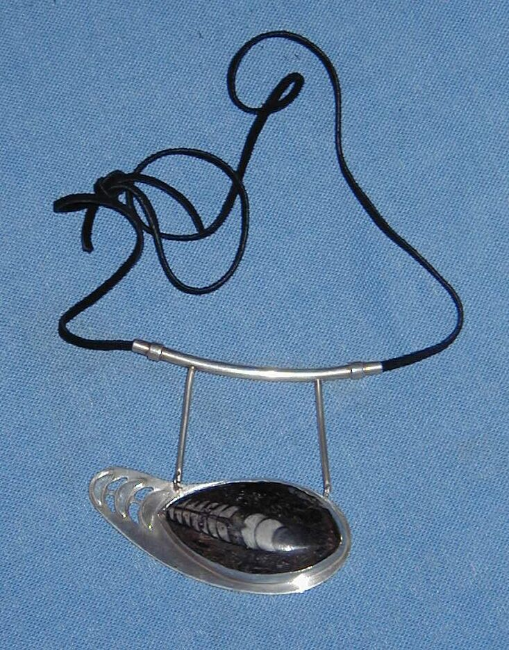
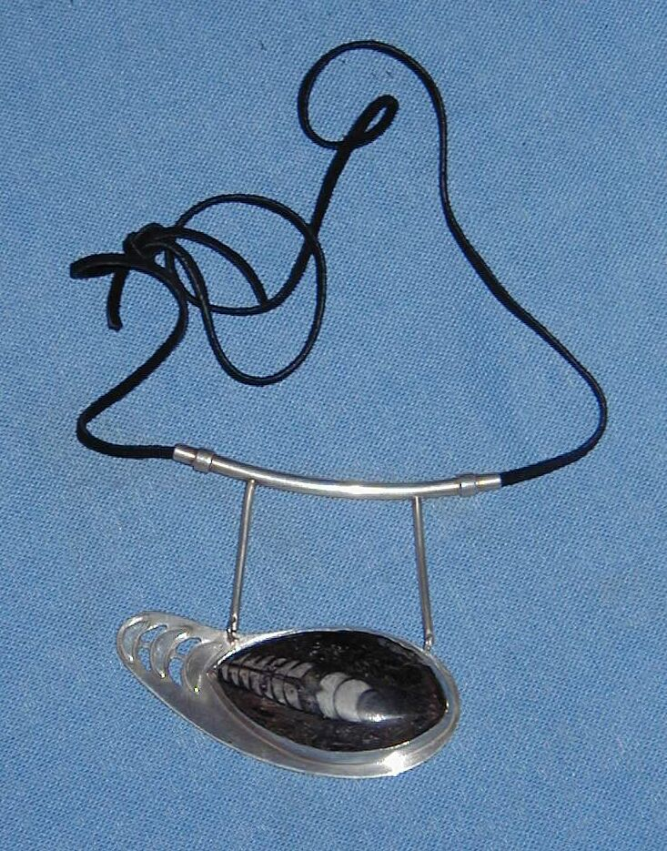

|  |
Rocks 'n Rags The Artist's Way |
 |
|  |
Rocks 'n Rags The Artist's Way |
|
While trained as a physicist and working for most of my career as a software researcher and manager, I have had a long love affair with color, shape and texture.
Over the last 45 years, I have sketched in pencil, pen and pastel.
I have flirted with clay sculpture and woodwork.
I have collected many semi-precious stones and shells over many trips to South Africa and
Israel.
I also gather found objects such as wires, stones and bolts on walks ("picking up junk").
|
I sometimes paint in acrylics,
|
About 1996, I started working with stone and glass beads, wire and chain,
then gravitated
into wearable metalwork.
I am inspired by the interplay of colors, textures and forms
in the combination of
natural cut semi-precious stones, fossils and multiple metals.
There is something inately satisfying about beating, bending, cutting, filing and melting metal
to complement an unusual stone.
I studied basic jewelry techniques with Edith Sommer and Hilary Finck,
and continue to learn from other artists in the Cubberly Jewelery Studio....
I spent a summer learning repousse and chasing with Carol Zarate in Israel, and these techniques have inspired a new series of works.
Short tutorials from several artists on coloring, texturing and shaping metal during SNAG 2003 have sharpened my appetite for more variety and experimentation in my work.
Each year in June until about 2008, I used to go to Jack da Silva's fabulous four day MAKER in Loma Mar
to learn new techniques, reenergize, exchange war stories and master new skills:
Sadly, this program came to an end due to a lack of funding.
Around 2010, I took an art-welding class at the Crucible in Oakland, and have begun a series of steel, copper and brass sculptures, typically whimsical birds and beasts. Most of the materials have come from found objects, such as rebar, helium tanks, bed frames, and old bicycles. I also periodically get "donations" from contractors and friends, such as old gates and fence posts. I have added new gas and electric welding equipment and grinding and cutting tools to manage these larger projects. I also use a lot of acrylic and enamel paints to liven up the "animals".
In 2019, I was pleasantly surprized to discover that my teacher from Israel, Carol Zarate, had relocated to Palo Alto, and I was able to learn some new techniques from her, including chain making.
Martin